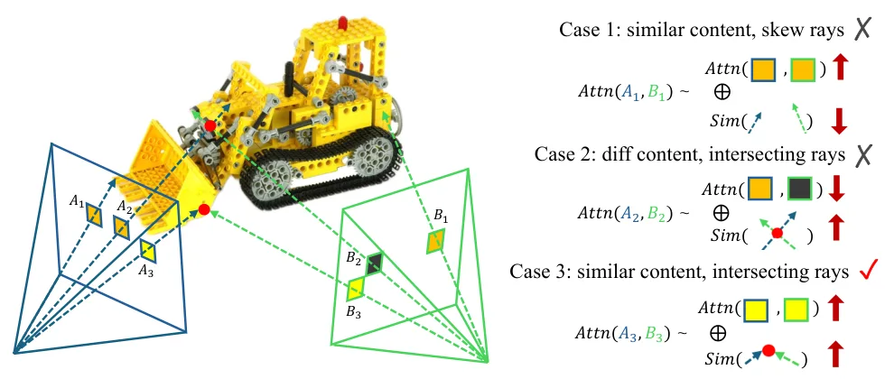
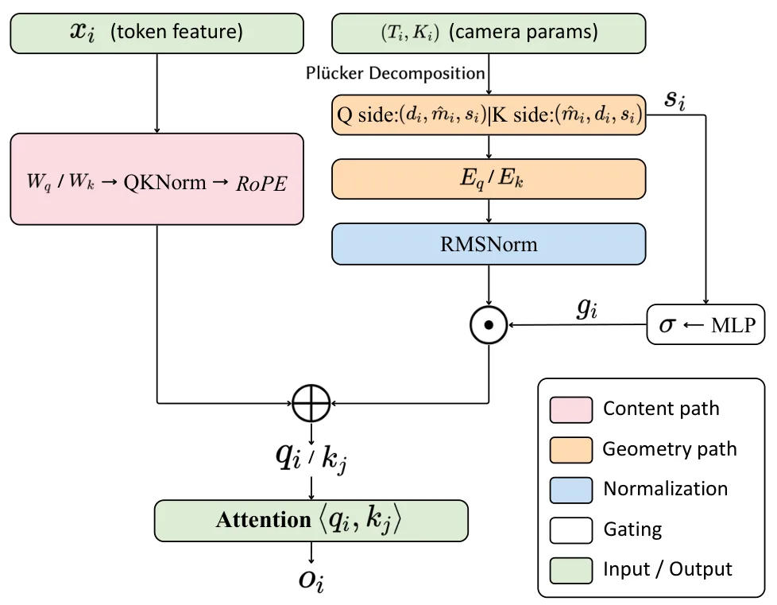
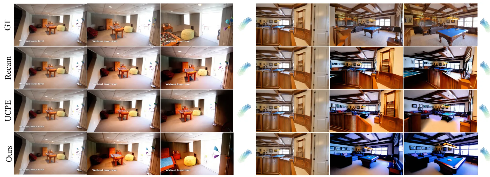
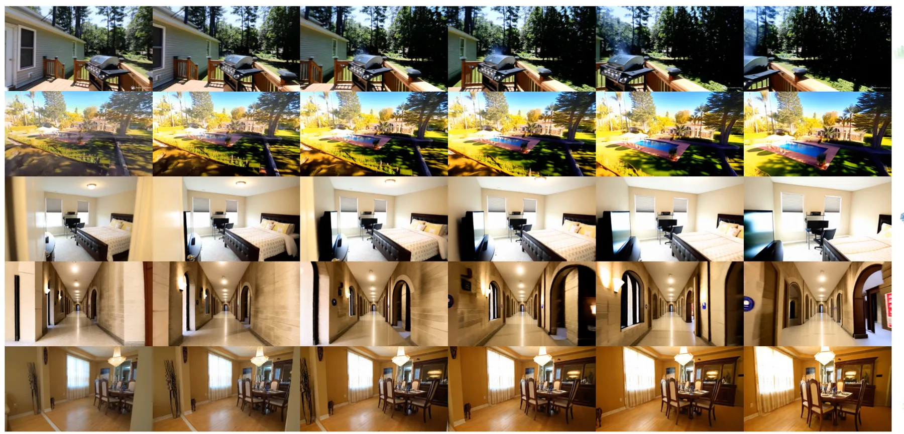
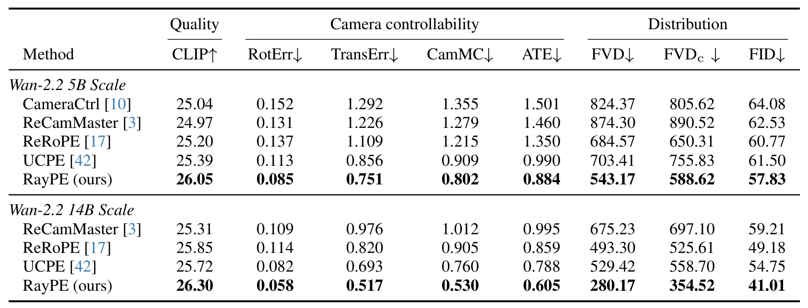

RayPE：面向 3D-aware 视频生成的射线空间位置编码RayPE: Ray-Space Positional Encoding for 3D-Aware Video Generation
不是重建/定位方法，但相机射线几何编码、SfM/deep-SLAM/metric 尺度自适应和相机可控视频生成对仿真数据生成有间接参考价值。
一句话工作总结
把相机射线的 6D Plücker 坐标注入视频 DiT attention，使生成模型显式感知射线几何和相机尺度差异。
摘要
现代视频扩散 Transformer 通常用 RoPE 在图像坐标和时间轴上放置 token，但这些坐标不包含场景三维结构。RayPE 观察到两条相机射线的几何关系可由 Plücker reciprocal product 描述，其双线性形式与 Transformer attention 中的点积相似。方法将每个 token 的 6D Plücker 坐标加性注入 self-attention 的 query/key，并通过 query/key flip 让对称身份配置对应 reciprocal product；注意力分解为内容项、几何项和交叉项。为适配 SfM、deep SLAM、metric 等不同相机平移尺度的数据，RayPE 解耦射线方向与 moment 幅值，用 log-magnitude 学习门控并配合 RMSNorm 稳定训练。模块参数增量小于 0.1%，可从预训练视频 DiT 零初始化，提升相机可控性、跨帧 3D 一致性和视频质量。
Modern video diffusion transformers position their tokens through RoPE on the (u,v,t) axes -- a description of the camera's sampling grid that says nothing about the 3D structure of the scene. We observe that the geometric relation between two camera rays is captured by the Plucker reciprocal product, which is bilinear in the two rays -- the same algebraic form as the dot product in Transformer attention. Building on this analogy, we propose RayPE, a positional-encoding extension that injects per-token 6D Plucker coordinates additively into the queries and keys of self-attention, with a query/key flip arrangement under which the symmetric identity configuration coincides exactly with the reciprocal product. The injection is additive, the resulting attention score decomposes into a content term, a geometry term, and two content and geometry cross-terms -- all of which our experiments find individually necessary. To make the encoding stable across video data with heterogeneous camera-translation scales (SfM, deep SLAM, metric), we further decouple ray direction from moment magnitude, gate the encoding by a learned function of the log-magnitude, and apply RMSNorm to align it with the QKNorm-normalized content branch. The full module adds less than 0.1% parameters to a pretrained video DiT, is zero-initialized to start from the pretrained weights, and improves camera controllability, cross-frame 3D consistency, and overall video quality on a four-dataset training mixture.
中文解读摘录
- 英文题名：SatSplatDiff: Geometry-preserving generative refinement for high-fidelity satellite Gaussian Splatting
- 作者：Jiyong Kim, Shuang Song, Ronjgun Qin
- 类别/来源：cs.CV；23 pages, 15 figures；采集 score=10；阅读优先级=8.2/10。
- 一句话总结：在 SatSplat 的摄影测量 DSM 初始化与 2DGS 阴影建模基础上，加入深度监督、多尺度几何细化和 shadow-guided generative refinement，试图提升卫星 3DGS 外观质量同时抑制扩散式细化带来的几何幻觉。
- 为什么值得看：卫星/航测场景的视角通常集中在顶部，建筑立面监督不足，3DGS 容易出现洞、立面不稳定和跨 tile 不一致。本文强调“生成式增强不能破坏几何一致性”，用几何计算阴影图约束监督图像更新；摘要报告 IARPA2016/DFC2019 上几何 MAE 最高降低 18%、FID-CLIP 改善 28–45%、可达 5x 分辨率增强，并给出源码
https://github.com/GDAOSU/SatSplatDiff。建议重点复核代码完整度、DSM/阴影先验依赖、跨 tile 泛化和是否存在外观 hallucination。 - 标签：卫星三维重建、3DGS、生成式细化、几何一致性
- 链接：abs / PDF
图表/页面预览

{kind=link}

{kind=link}

{kind=link}

{kind=link}

{kind=link}
